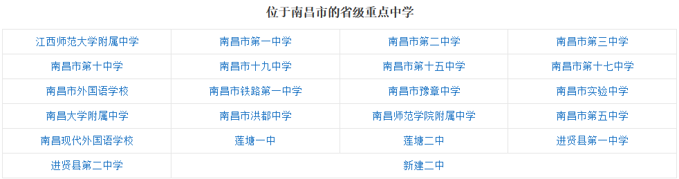
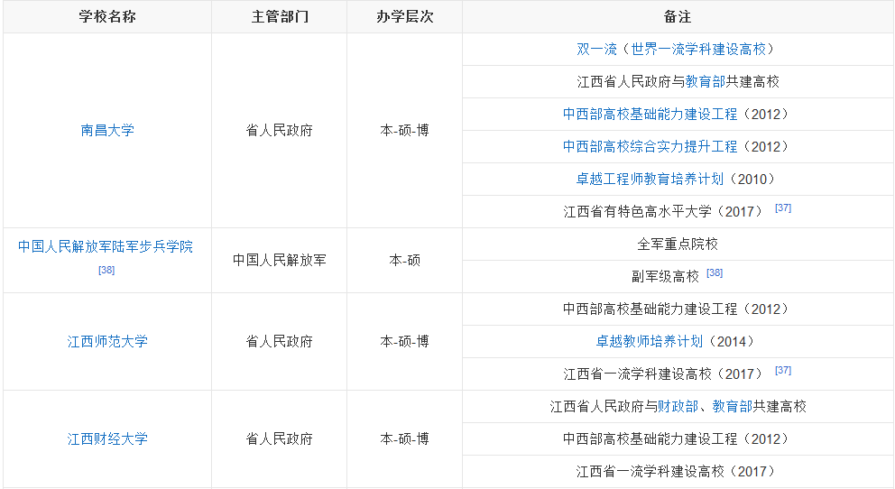
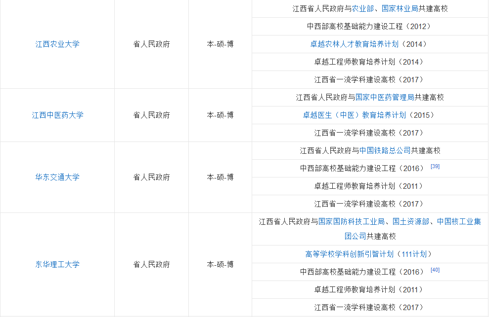
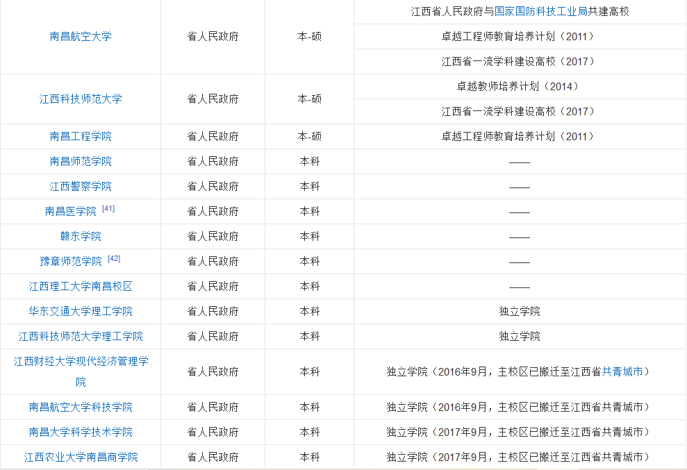
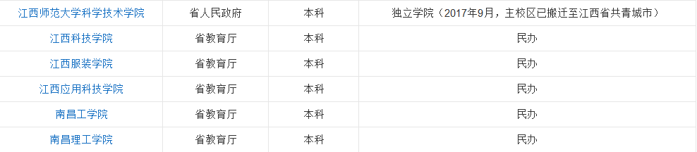

2018年,南昌市拥有各级各类学校879所(不含技工学校),教职工9.63万人,其中专任教师7.93万人。全年招收研究生1.27万人,在校研究生3.21万人,毕业研究生0.82万人。全市共有普通高校53所,招生18.22万人,在校生61.06万人,毕业生17.74万人。中等专业学校26所,招生2.37万人,在校生6.93万人,毕业生2.94万人。普通高中75所,招生3.46万人,在校生10.63万人,毕业生3.43万人。普通初中213所,招生6.9万人,在校生19.94万人,毕业生6.14万人,初中阶段适龄少年入学率100%。职业高中17所,招生2428人,在校生12166人,毕业生2759人。小学487所,招生7.77万人,在校生42.98万人,毕业生6.88万人,小学适龄儿童入学率100%。特殊学校8所,特殊教育招生212人,在校生1007人,毕业生198人。幼儿园934所,在园幼儿14.54万人。
2020年7月,入选教育部普通高中新课程新教材实施国家级示范区名单。
南昌是高教名城,高等院校和科研院所较集中,科技优势明显,科技创新能力较高。截至2012年,南昌拥有56所普通高等院校,数量位居全国前列,2008年在校研究生13568人,在校大学生46.38万人,在校中专生15.26万人,普通高中在校生16.72万人。
   2018年,全市文艺创作获省级以上奖项20个,其中国家级奖项6个。年末全市拥有各类专业艺术表演团体4个,公共图书馆10个,文化馆10个,博物馆、纪念馆17个,全国重点文物保护单位9处。年末全市有线电视用户126.45万户。
国家一级图书馆:江西省图书馆、南昌市图书馆、南昌市东湖区图书馆、南昌市青山湖区图书馆、进贤县图书馆。